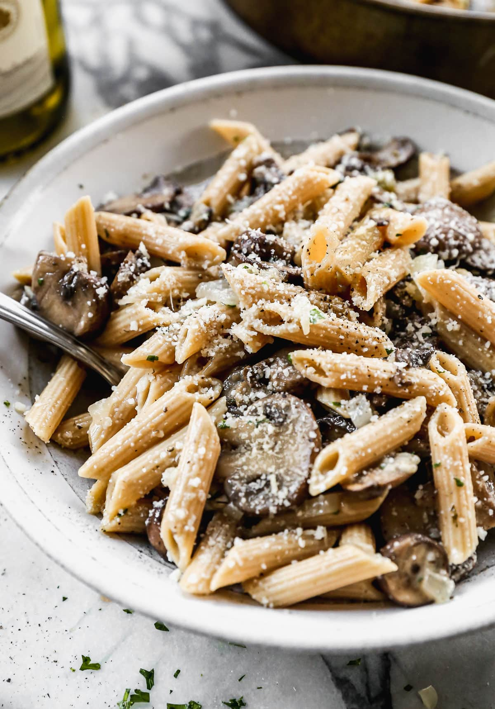

Mushroom Pasta

Description
This dish is one of my favourite recipes! It's a perfect balance of savoriness from the mushrooms, acidity from the wine, and fragrance from the herbs
Ingredients
- Wine
- Tomato Paste
- Mushrooms
- Rosemary
- Olive Oil
- Penne
- Parmesan
- Cashews
Steps
- Saute Mushrooms with Olive Oil
- Add a small dab of tomato paste
- Reduce with wine
- Add Rosemary
- Add Cooked Penne
- Top with Parmesan and crushed cashews